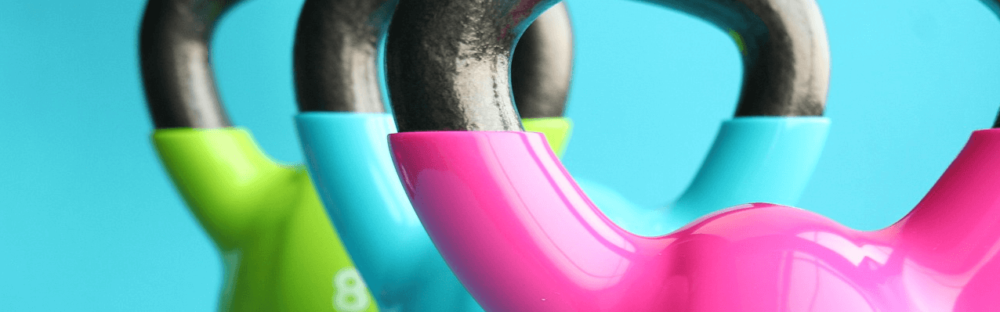

Käsipainotreeni
Jos olet etsinyt ohjelmaa johon et tarvitse muuta kuin käsipainot ja säädettävän penkin, on tämä ohjelma tehty sinulle.
Ohjelma on tarkoitettu kestäväksi kymmenen
viikkoa ja se sopii aloittelijoille, mutta myös hieman kokeneemmillekkin.
Yksi treeni kestää noin 45 minuuttia.
| SALIOHJELMA YHTEENVETO |
| TYYPPI |
Kuntosali/Kotitreeni |
| TAVOITTEET |
Lihasten kasvatus |
| VAIKEUSASTE |
Aloittelija |
| PÄIVIÄ VIIKOSSA |
3 |
| SUKUPUOLI |
Nainen/Mies |
| MAANANTAI - RINTA JA OJENTAJAT |
| Liike |
Sarjat |
Toistot |
| Vinopenkki käsipainoilla
| 4 |
12,10,10,8 |
| Penkkipunnerrus käsipainoilla
| 4 |
12,10,10,8 |
| Vipunosto sivulle
| 3 |
12 |
| Ranskalainen punnerrus
| 3 |
12 |
| Ojentaja kick back
| 3 |
12 |
| Yhden käden käsipainopunnerrus niskantakaa
| 3 |
12 |
| KESKIVIIKKO - SELKÄ JA HAUIS |
| Liike |
Sarjat |
Toistot |
| Yhden käden soutu
| 5 |
12,10,10,8,6 |
| Vinosoutu
| 5 |
12,10,10,8,6 |
| Käsipaino pullover
| 2 |
12,10 |
| Hauiskääntö
| 3 |
10 |
| Hauiskääntö seisten
| 3 |
10 |
| Vasarakääntö
| 2 |
10 |
| PERJANTAI - JALAT JA OLKAPÄÄT |
| Liike |
Sarjat |
Toistot |
| Askelkyykky
| 4 |
12,10,10,8 |
| Käsipaino step up
| 3 |
12 |
| Käsipaino kyykky
| 4 |
12,10,10,8 |
| Suorin jaloin maastaveto
| 4 |
12,10,10,8 |
| Pohjenousu istuen
| 2 |
15,12 |
| Pohjenousu seisten
| 2 |
12,10 |
| Pystypunnerrus seisten
| 4 |
12,10,10,8 |
| Vipunosto sivulle
| 3 |
12,10,10 |
| Olankohautus
| 4 |
12,10,10,8 |